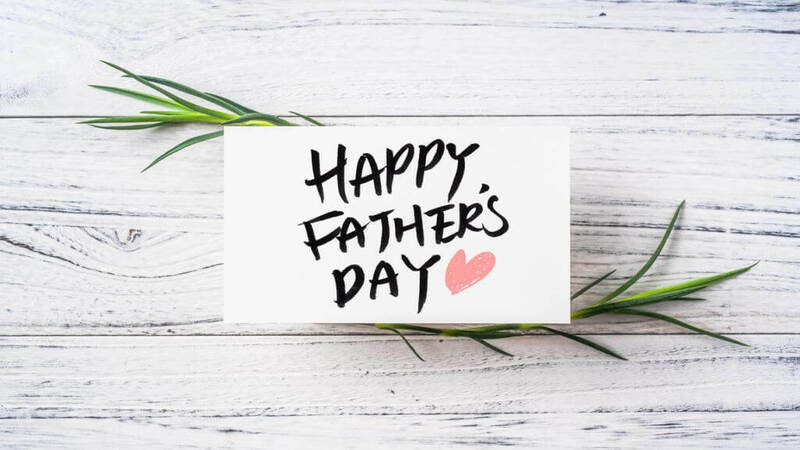

FATHER'S DAY IDEAS
Celebrating our fathers, our father figures and the fathers to our kids goes a long way in appreciating their roles in our lives. One way of doing this is going out of our way to prepare their favourite meals or surprising them with something they have been wanting to try.
We can also celebrate our fathers by preparing a barbecue with a handful of his friends and family. Barbecue is best done outdoors later in the afternoon, either in the garden, backyard, patio, or porch. This shows thoughtfulness to them and they will feel appreciated.
Gift Him A Drink.Men will always appreciate a good drink, especially if it is their favourite.